5.19. Surrogate-aided Bayesian Calibration of a Reinforced Concrete Column Using Experimental Cyclic Test Data¶
Problem files |
5.19.1. Outline¶
This example demonstrates the application of surrogate-aided Bayesian calibration [Taflanidis_et_al_2025] to identify material and section parameters of a reinforced concrete column model using experimental cyclic loading data. The study showcases quoFEM’s new Use Approximation feature for Bayesian calibration, which employs Gaussian Process (GP) surrogates within an adaptive Bayesian framework to significantly reduce computational costs while maintaining calibration accuracy.
The experimental dataset is from [Soesianawati_et_al_1986], part of the PEER Structural Performance Database [PEER_SPD] containing over 400 RC column tests. This example builds on the SimCenter educational module Uncertainty Quantification (UQ) for structural models [SimCenter_Educational_Modules], which uses the same structural model to demonstrate various UQ methods.
Problem Setup: A cantilever RC column (0.4m × 0.4m × 1.6m) subjected to cyclic lateral loading is modeled using OpenSeesPy with lumped plasticity. Three critical parameters are calibrated: crack factor (stiffness degradation ratio), yield moment (Mp), and peak moment capacity (Mc) using 548 experimental force-displacement measurements.
Methodology: The GP-AB (Gaussian Process - Aided Bayesian calibration) algorithm iteratively builds a GP surrogate model through adaptive design of experiments, strategically selecting training points using exploitation and exploration strategies while requiring only 2 × (number of calibration parameters) evaluations per iteration.
Key Findings: The surrogate-aided approach achieves orders of magnitude reduction in computational demand (66 vs 78,000 model evaluations) and wall-clock time (13.4 vs 95.7 minutes) while maintaining equivalent posterior accuracy with parameter differences below 0.5%.
Broader Impact: This demonstration validates surrogate-aided calibration as a transformative tool for practical Bayesian parameter identification of computationally expensive structural models, enabling rigorous uncertainty quantification that would otherwise be prohibitively costly.
5.19.2. Files Required¶
ColumnModel.py: OpenSeesPy structural analysis script
ColumnParams.py: Parameter definitions for calibration
experimentDisp.csv: Experimental displacement time history
experimentForce.csv: Experimental force measurements for calibration
5.19.3. Experimental Setup¶
The calibration example uses experimental data from [Soesianawati_et_al_1986], part of the PEER Structural Performance Database (https://nisee.berkeley.edu/spd/index.html) containing over 400 cyclic lateral-load tests from multiple research institutions worldwide.

Fig. 5.19.3.1 Test specimen configuration [Soesianawati_et_al_1986]¶
Test Specimen: The column specimen has a 400mm × 400mm square cross-section with a height of 1600mm, reinforced with 12 HD16 longitudinal bars and 13mm concrete cover. Testing involves constant axial compression (744 kN) and displacement-controlled cyclic lateral loading.
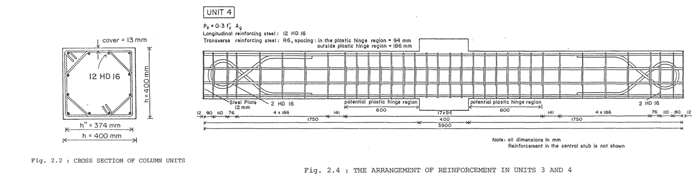
Fig. 5.19.3.2 Test specimen reinforcement details [Soesianawati_et_al_1986]¶
Loading Protocol: The quasi-static cyclic protocol progressively increases displacement amplitude to ±78mm (4.9% drift), applying multiple cycles at each level to characterize behavioral transitions from elastic response through near-collapse performance while capturing strength degradation and stiffness deterioration.
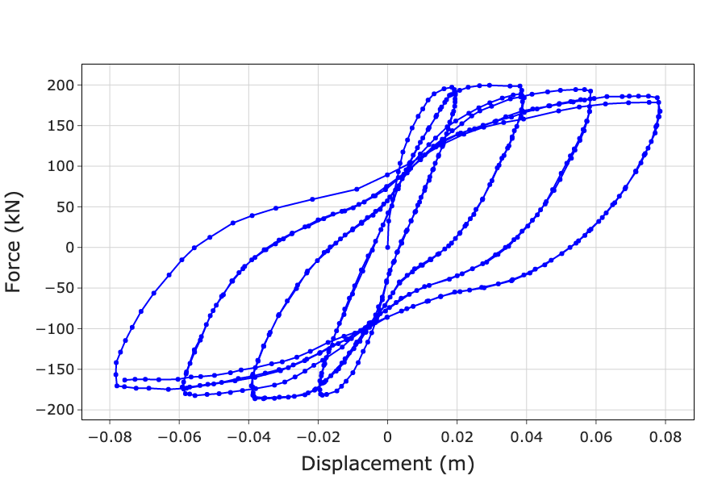
Fig. 5.19.3.3 Experimental force-displacement hysteretic response¶
Measured Data: The dataset comprises 548 synchronized displacement and force measurements across multiple complete hysteretic cycles.
5.19.4. Numerical Model¶
An OpenSeesPy lumped plasticity model reproduces the experimental conditions, using an elastic beam-column element connected to a nonlinear rotational spring at the base. This approach concentrates nonlinear behavior in the plastic hinge while treating the remainder as elastic, efficiently capturing global response characteristics while maintaining computational efficiency.
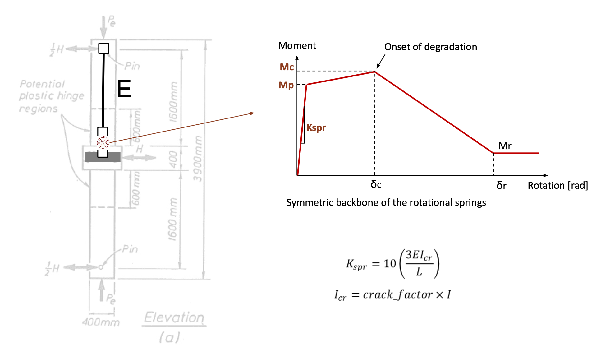
Fig. 5.19.4.1 Numerical model schematic showing lumped plasticity approach with calibration parameters. Figure from [SimCenter_Educational_Modules].¶
The model includes effective stiffness accounting for cracking, applied loads matching experimental conditions (744 kN axial compression and 548-point displacement history), and P-Delta geometric transformation for second-order effects.
Each analysis requires ~2 seconds per iteration. Direct Bayesian calibration typically needs thousands of evaluations (potentially hours of runtime), motivating the surrogate-aided approach. While this model allows direct TMCMC for validation, complex finite element models requiring minutes or hours per evaluation make direct calibration prohibitively expensive.
5.19.5. quoFEM Setup¶
The calibration is performed using quoFEM with the following configuration:
Step 1: UQ Tab - Bayesian Calibration Settings: In the UQ tab, select Bayesian Calibration as the method and choose UCSD-UQ as the UQ engine. For the model type, select Non-hierarchical, which utilizes the TMCMC algorithm for posterior sampling. Set the sample size to 1000 and the random seed to 20 to ensure reproducibility. Specify the calibration data file by providing the path to experimentForce.csv. To accelerate the calibration process, enable the Use Approximation option, which allows surrogate-aided Bayesian calibration. The figure below illustrates the recommended UQ tab configuration.
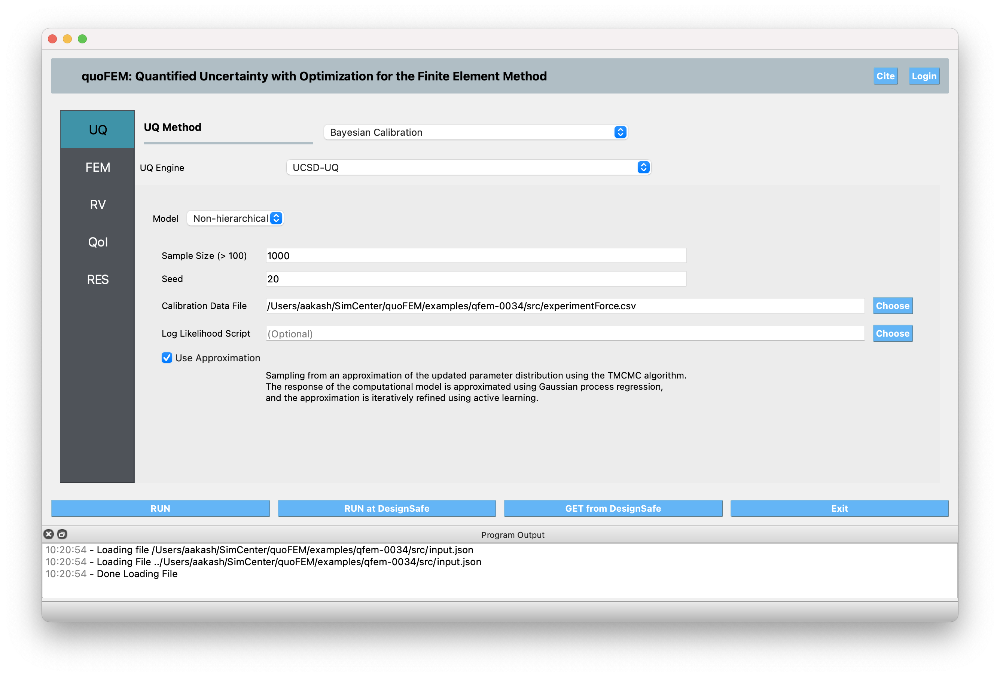
Step 2: Forward Model (FEM) Tab: In the FEM tab, choose Python as the FEM engine. Provide the full path to ColumnModel.py as the input script and the full path to ColumnParams.py as the parameters script.
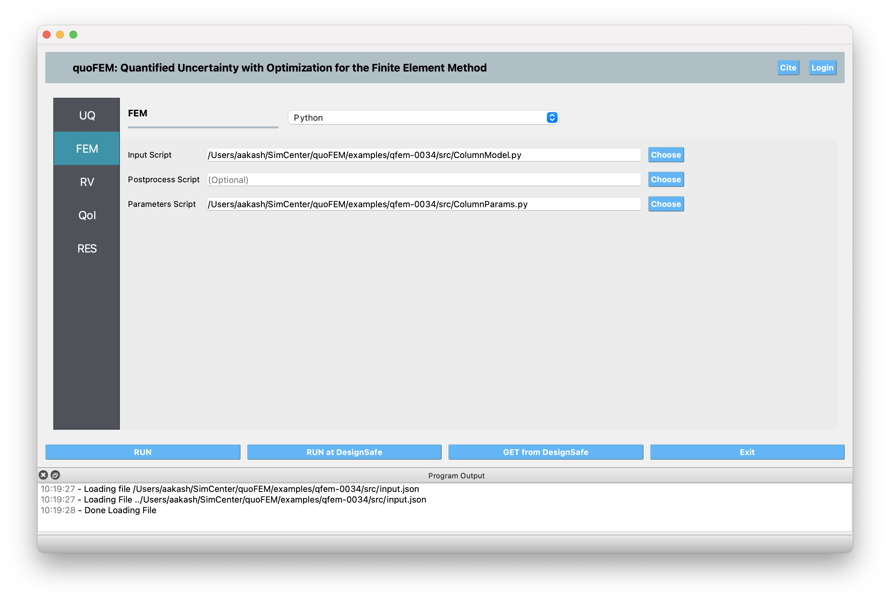
Step 3: Input Random Variables (RV) Tab: Define the prior distribution for the three parameters to be calibrated:
Variable Name |
Distribution |
Min. |
Max. |
|---|---|---|---|
crack_factor |
Uniform |
0.05 |
0.8 |
Mp |
Uniform |
100 |
500 |
Mc |
Uniform |
100 |
600 |
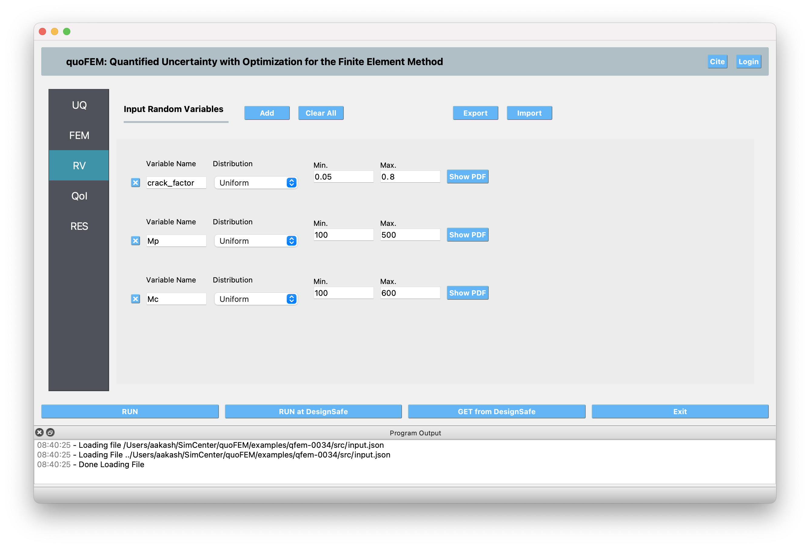
Step 4: Output Quantities of Interest (QoI) Tab: Define the response quantities to match against experimental data:
QoI1: - Variable Name: force - Length: 548 (matching experimental data points)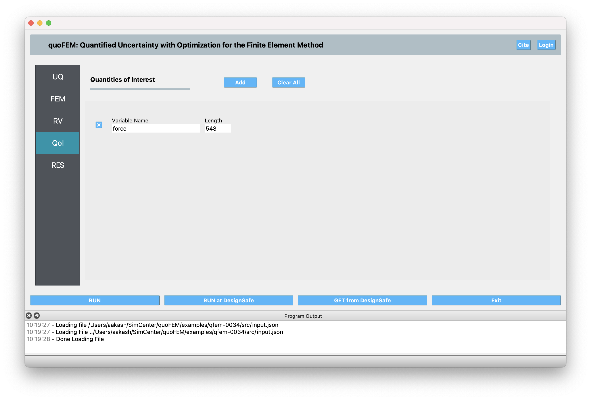
Step 5: Execution
Click the RUN button to start the calibration process on your local machine.
Or, click the RUN at DesignSafe button to submit the job to DesignSafe-CyberInfrastructure and utilize the parallel computing resources provided by DesignSafe.
5.19.6. Results¶
Upon completion of the calibration, quoFEM generates summary statistics and visualizations to help assess the results:
Summary statistics: In the Summary tab of the results (RES) panel, key metrics such as the posterior mean and posterior standard deviation for each calibrated parameter are provided. These statistics are also shown for each component of the force response.
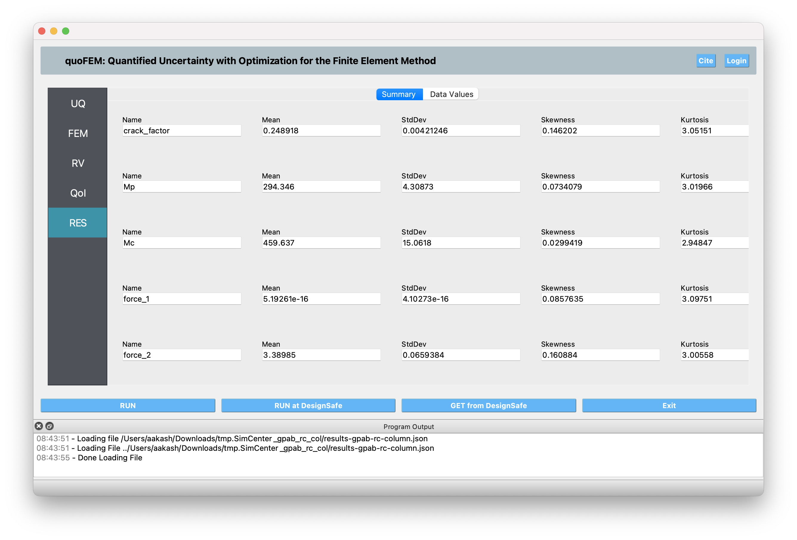
Posterior samples: The Data Values tab of the results (RES) panel displays charts for visualizing the posterior samples and a table containing the values drawn from the posterior distribution of the parameters and the corresponding model responses. Posterior samples can be exported as text files for further analysis by clicking the buttons in the Data Values tab. Clicking on the header rows of the chart will sort the values in ascending or descending order.
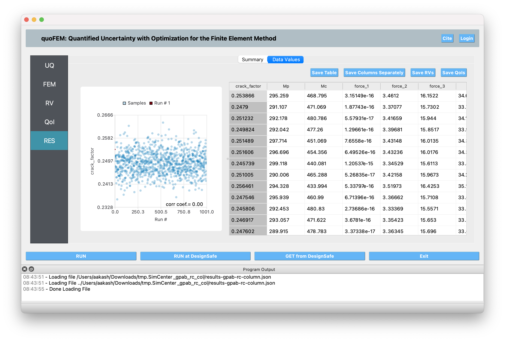
You can toggle between visualizations such as scatter plots, histograms, and empirical cumulative distribution functions (CDFs) in the chart by left- and right-clicking on cells inside the chart area (not on the header rows). Right-clicking on a cell inside a column will plot the variable in that column along the x-axis, while left-clicking will plot that variable along the y-axis.
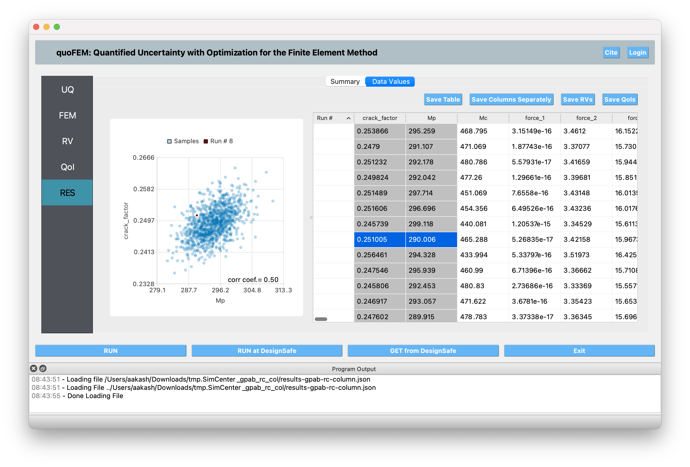
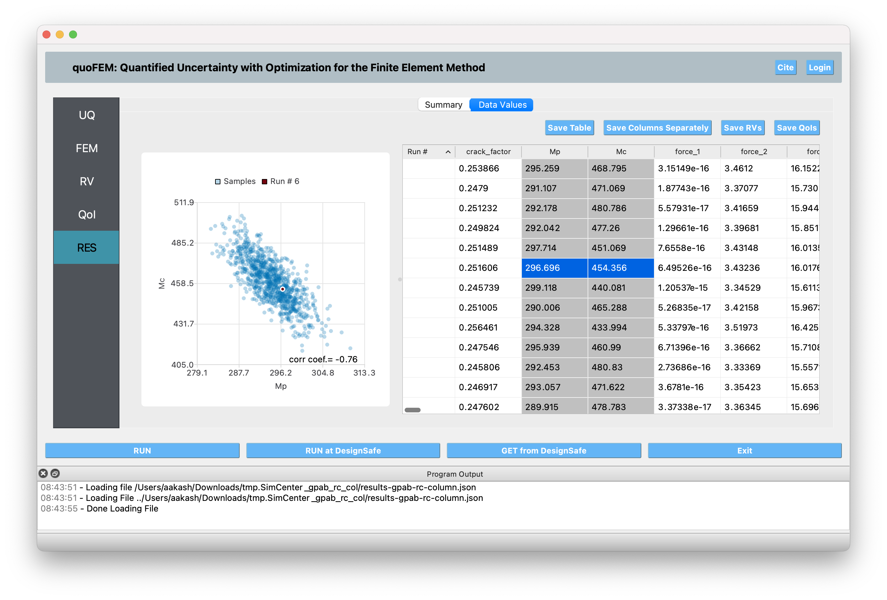
By left- and right-clicking within the same column, you can plot the CDF of that variable.
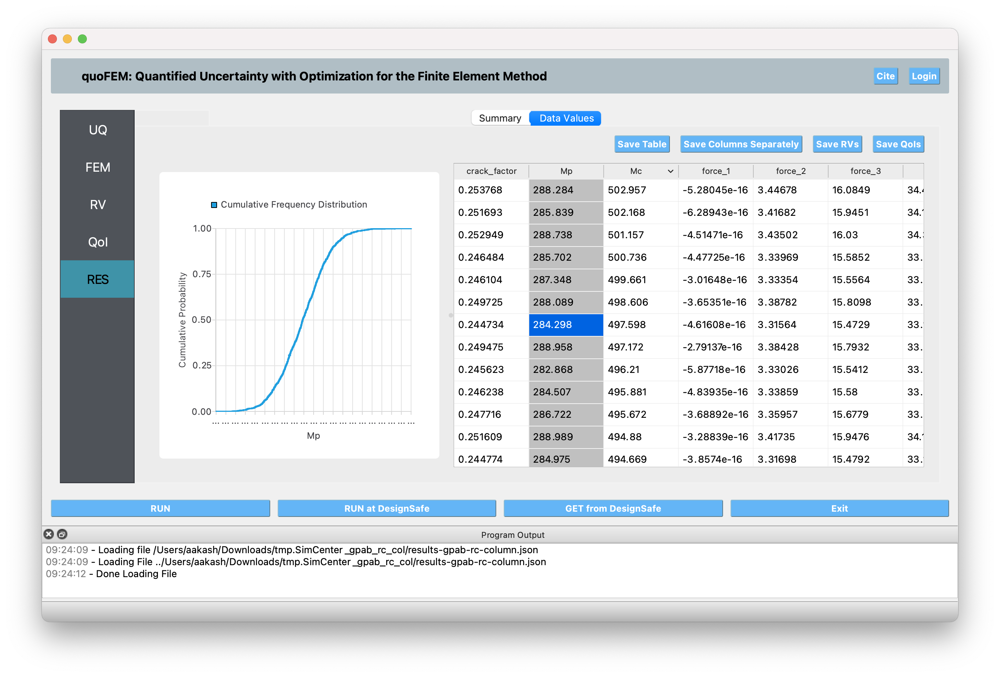
By right- and left-clicking the same column, you can plot the histogram of that variable.
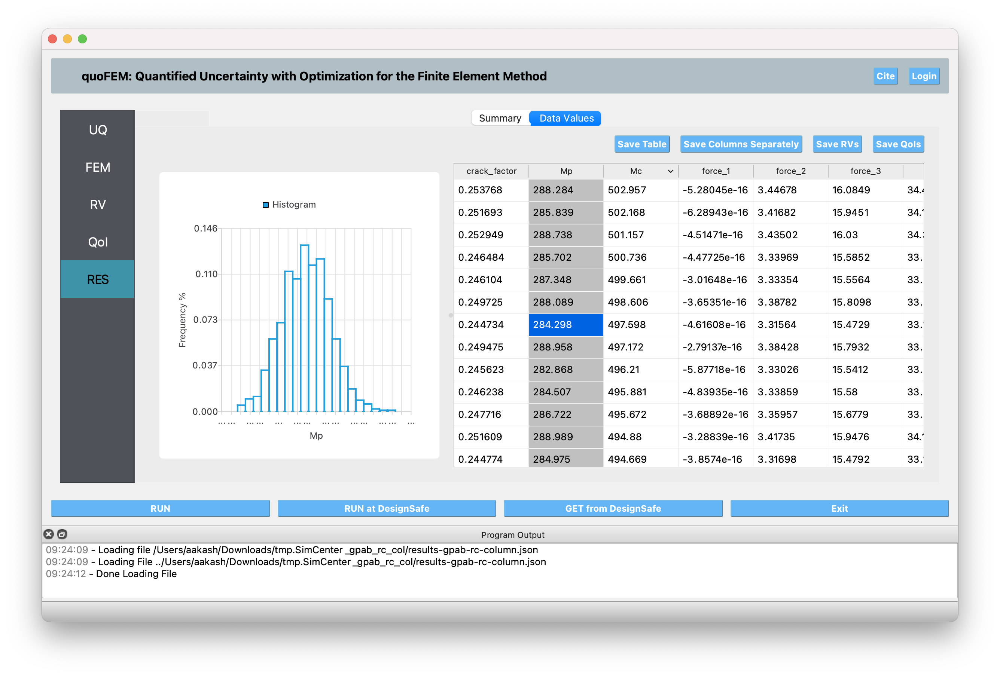
You can expand the chart by dragging the area between the chart and the table.
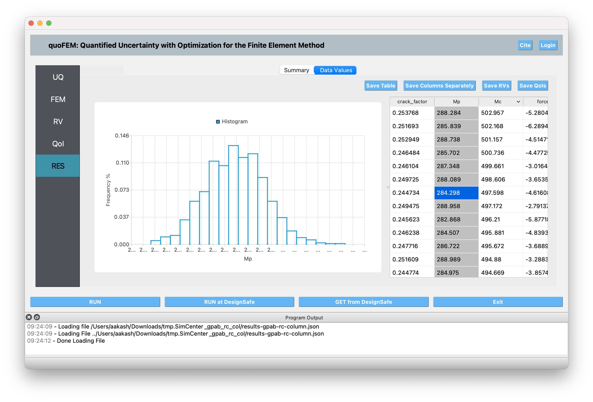
5.19.6.1. Comparison with Direct TMCMC Results¶
For validation purposes, the same calibration was performed without the surrogate approximation (i.e., with the Use Approximation option disabled). The following figures show the comparison between surrogate-aided and direct TMCMC results, demonstrating that the surrogate model effectively captures the essential behavior of the structural model while providing substantial computational savings:
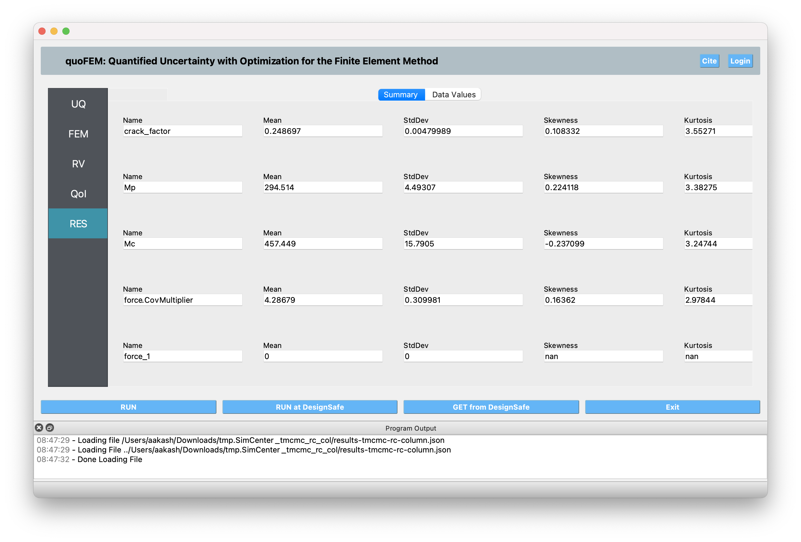
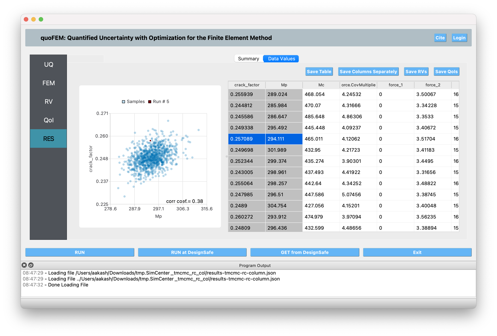
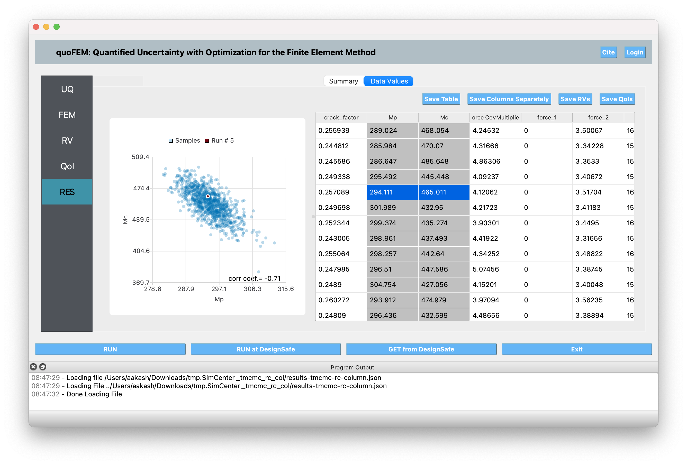
5.19.7. Discussion¶
The Bayesian calibration successfully identified the three key parameters of the reinforced concrete column model using the experimental cyclic loading data. The results demonstrate a significant reduction in parameter uncertainty compared to the initial prior distributions, indicating that the experimental data provides valuable information for constraining the model parameters.
5.19.7.1. Parameter Calibration Results¶
The following table compares the prior and posterior statistical moments for the three calibrated parameters:
Parameter |
Prior Mean |
Prior Std Dev |
Posterior Mean |
Posterior Std Dev |
Uncertainty Reduction* |
|---|---|---|---|---|---|
crack_factor |
0.425 |
0.217 |
0.249 |
0.004 |
98.0% |
Mp (kN-m) |
300.0 |
115.5 |
294.3 |
4.31 |
96.3% |
Mc (kN-m) |
350.0 |
144.3 |
459.6 |
15.1 |
89.6% |
Uncertainty reduction = (1 - Posterior Std Dev / Prior Std Dev) x 100%
5.19.7.2. Key Findings¶
Crack Factor Parameter: The posterior distribution of the crack factor shows the most dramatic uncertainty reduction (98.0%), with the calibrated value converging to approximately 0.25. This suggests that the experimental data strongly constrains the ratio of cracked to uncracked section moment of inertia, indicating that the column exhibits significant stiffness degradation due to cracking under cyclic loading.
Yield Moment (Mp): The calibrated yield moment of 294.3 kN-m is close to the prior mean of 300.0 kN-m, but with a substantial reduction in uncertainty (96.3%). The narrow posterior distribution (standard deviation of 4.31 kN-m) indicates high confidence in the identified yield capacity of the plastic hinge.
Peak Moment Capacity (Mc): The posterior mean of 459.6 kN-m is significantly higher than the prior mean of 350.0 kN-m, suggesting that the experimental data reveals a higher moment capacity than initially expected. Despite having the largest absolute posterior standard deviation (15.1 kN-m), this parameter still shows an 89.6% reduction in uncertainty.
The calibrated parameter values are physically reasonable: crack factor of 0.25 represents realistic stiffness degradation for RC under cyclic loading, while the moment capacities (294.3 and 459.6 kN-m) show appropriate strength hierarchy and consistency with the column geometry. The substantial uncertainty reductions across all parameters indicate the experimental data is highly informative.
5.19.7.3. Comparison with Results Without Surrogate¶
To validate the effectiveness of the surrogate-aided calibration approach, a comparison was performed between results obtained with and without the surrogate approximation:
Parameter |
GP-AB Mean |
GP-AB Std |
TMCMC Mean |
TMCMC Std |
Mean Diff |
Std Diff |
|---|---|---|---|---|---|---|
crack_factor |
0.249 |
0.004 |
0.249 |
0.005 |
0.0002 |
0.0006 |
Mp (kN-m) |
294.3 |
4.31 |
294.5 |
4.49 |
0.17 |
0.18 |
Mc (kN-m) |
459.6 |
15.1 |
457.4 |
15.8 |
2.19 |
0.73 |
Validation of Surrogate Model Performance: The comparison demonstrates excellent agreement between the two approaches, with percentage differences in posterior means being less than 0.5% for all parameters. The small differences in standard deviations indicate that both methods provide similar uncertainty quantification. The largest absolute difference occurs in the Mc parameter (2.19 kN-m difference in mean), but this represents less than 0.5% of the parameter value, which is negligible for practical engineering applications.
5.19.7.4. Computational Efficiency¶
Upon completion of the analysis, the RES panel includes a Log tab displaying detailed log file contents. These files provide a comprehensive summary of computational performance, including total runtime and number of model evaluations. Comparing the log files from both calibration approaches reveals the dramatic computational efficiency gains achieved by the surrogate-aided method:
Metric |
Surrogate-Aided Method |
Direct TMCMC Method |
Efficiency Gain |
|---|---|---|---|
Total Runtime |
13.4 minutes |
95.7 minutes |
7.1x faster |
Model Evaluations |
66 |
78,000 |
1,182x fewer |
The surrogate-aided method demonstrates transformative computational efficiency by requiring only 66 strategically selected model evaluations compared to 78,000 needed for direct TMCMC sampling. This remarkable 1,182-fold reduction in computational demand is achieved through an intelligent adaptive design of experiments strategy that systematically adds 6 training points per iteration (following the 2xn_θ = 2x3 pattern for the three calibration parameters). Each iteration uses both exploitation points (focused on high-posterior-probability regions) and exploration points (covering unexplored parameter space) to maximize information gain from the GP surrogate model.
The 7.1x speedup in wall-clock time represents an 86% reduction in computational time, transforming what would be a 95.7-minute direct calibration into a 13.4-minute surrogate-aided process. This efficiency gain becomes even more significant for complex finite element models where individual evaluations may require minutes or hours rather than < 2 seconds. The surrogate-aided approach thus enables practical Bayesian calibration of computationally intensive structural models that would otherwise be prohibitively expensive to analyze.
5.19.8. References¶
- Taflanidis_et_al_2025
Alexandros A. Taflanidis, B.S. Aakash, Sang-ri Yi, and Joel P. Conte, “Surrogate-aided Bayesian calibration with adaptive learning strategies,” Mechanical Systems and Signal Processing, Volume 237, 2025, 113014, https://doi.org/10.1016/j.ymssp.2025.113014.
- Soesianawati_et_al_1986(1,2,3,4)
Soesianawati, M.T., Park, R., and Priestley, M.J.N. (1986). “Limited Ductility Design of Reinforced Concrete Columns.” Report 86-10, Department of Civil Engineering, University of Canterbury, Christchurch, New Zealand.
- PEER_SPD
PEER Structural Performance Database (SPD). Available at https://nisee.berkeley.edu/spd/index.html
- SimCenter_Educational_Modules(1,2)
SimCenter Educational Modules: Uncertainty Quantification (UQ) for Structural Models. Available at https://simcenter.designsafe-ci.org/knowledge-hub/teaching-gallery/